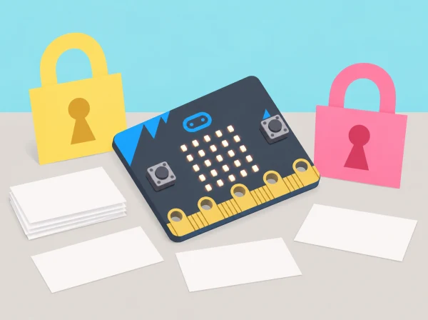

Clau segura, dades protegides
🏷️ Seguretat i privacitat
🌱 Situació, repte i intenció
La unitat oficial té tres lliçons per a 11–14 anys i s’imparteix idealment després de Computing fundamentals. Aquesta versió local per a tercer cicle incorpora una activació de pseudocodi, targetes de suport i casos preparats; manté la progressió de ciberseguretat, contrasenyes fortes, algorisme amb variables/selecció i programació, prova, depuració i avaluació.
🎯 Aprenentatges i vocabulari
- Identificar riscos digitals i distingir una demostració escolar d’una protecció de seguretat real.
- Descompondre un algorisme didàctic que combina caràcters ficticis i regles de selecció.
- Programar una eixida simbòlica i provar casos sense introduir credencials o dades reals.
- Explicar per què una seqüència aleatòria de micro:bit no és una clau criptogràfica segura.
🧰 Materials i preparació
Micro:bit, MakeCode, targetes de missatges totalment ficticis, graelles d’algoritme, full de prova i targetes de tokens neutres (paraules sense referència personal, símbols i dígits). No useu serveis en línia, comptes, credencials reals ni dades de l’alumnat. El generador queda desconnectat de xarxes i la placa esborra la pantalla al final de cada prova. Prepareu exemples de missatges sense URL activa, fitxer adjunt, codi QR ni instrucció que l’alumnat puga seguir.
En la part de programació, useu una selecció aleatòria de MakeCode només com a recurs didàctic: no té garantia criptogràfica i pot ser reproduïble o previsible. L’eixida representa categories/índexs per provar el flux; no deseu ni aprofiteu cap combinació generada com a contrasenya. Si la versió d’editor no permet mostrar una seqüència segura i efímera, l’alumnat simula els tokens amb targetes i deixa la placa en una eixida simbòlica.
📅 Seqüència didàctica
Ciberseguretat, malware i hacking ètic (What is cyber security?)
Fase 1 · Activem i prediem
Distingiu dades públiques, privades i d’accés restringit amb targetes inventades. Predigueu quins indicis farien sospitós un missatge i quin pas segur es pot fer sense obrir-lo.
Fase 2 · Explorem i construïm
Classifiqueu sis exemples impresos: missatge esperat, avís urgent, adjunt no sol·licitat, petició de credencial, premi inesperat i remitent desconegut. Per a cadascun, marqueu indicis, què no podeu saber només mirant-lo i una resposta segura: no clicar, no descarregar, no respondre o consultar una persona adulta o el canal oficial escrit. No obriu cap contingut real.
Fase 3 · Expliquem i registrem
Compareu una auditoria autoritzada en un entorn de pràctica amb l’accés al compte d’una altra persona. Registreu qui dona permís, quin sistema s’inclou i on acaba la prova; no feu escanejos, proves de contrasenya ni connexions a xarxes reals.
Fase 4 · Apliquem i millorem
Dibuixeu dispositiu, compte fictici, dada i persona de suport. Afegiu una mesura preventiva i una resposta si hi ha dubte; reviseu el mapa perquè no continga cap dada real.
Fase 5 · Comprovem i reflexionem
Practiqueu una frase de report segur sense reenviar el missatge i justifiqueu una frontera d’autorització.
Contrasenyes i planificació de l’algorisme (Strong passwords)
Fase 1 · Activem i prediem
Contrasteu longitud, imprevisibilitat, unicitat i no reutilització amb exemples abstractes. Predigueu quina característica importa en cada cas; no proclameu «forta» una cadena només perquè conté símbols.
Fase 2 · Explorem i construïm
Definiu el prototip com un patró didàctic de tres posicions amb un token de cada conjunt neutre, mai una clau d’ús real. Prepareu llistes fictícies curtes de paraules o índexs, símbols inventats i dígits de prova. Cap token pot provindre de noms, dates o preferències personals.
Fase 3 · Expliquem i registrem
Escriviu pseudocodi: inicialitzeu variables per a posició i token; seleccioneu una opció d’un conjunt; avanceu la posició; repetiu fins a omplir tres llocs; mostreu només l’índex simbòlic i esborreu-lo en acabar. Anoteu què hauria de passar en cada pas.
Fase 4 · Apliquem i millorem
Planifiqueu casos amb conjunt buit o longitud no permesa, índex mínim i màxim, selecció fora de rang i categoria omesa. Reviseu el pseudocodi si algun cas no té una resposta definida.
Fase 5 · Comprovem i reflexionem
Una altra parella segueix l’algorisme amb les llistes de prova i comprova les prediccions.
Programem el prototip amb micro:bit (Making a password generator)
Fase 1 · Activem i prediem
Assigneu una variable a cada posició i compareu-la amb el pseudocodi. Predigueu quins índexs simbòlics mostraria una ronda amb tokens de demostració i què ha de fer l’ordre d’esborrat.
Fase 2 · Explorem i construïm
Programeu inicialització, selecció, condició i repetició limitada. Cada botó inicia una única generació de prova o esborra l’eixida. No mostreu una cadena completa que algú puga confondre amb una credencial real; si l’editor no permet una eixida efímera, simuleu els tokens amb targetes i deixeu la placa en una eixida simbòlica.
Fase 3 · Expliquem i registrem
Executeu tres rondes amb tokens d’aula, anoteu els índexs i comproveu que cada posició es completa. Compareu el resultat amb la predicció i el pseudocodi.
Fase 4 · Apliquem i millorem
Assenyaleu una diferència entre el codi i l’algorisme. Canvieu una part —inicialització, límit, ordre o esborrat— i torneu a executar la mateixa prova.
Fase 5 · Comprovem i reflexionem
Torneu a l’estat neutre i confirmeu que no hi ha cap credencial real ni historial guardat.
Provem, depurem i avaluem sense afirmar seguretat real
Fase 1 · Activem i prediem
Prepareu una matriu de proves amb conjunt buit, índex mínim i màxim, categoria omesa, reinici, entrada inesperada i repetició de tokens. Anoteu l’eixida prevista abans d’executar cada cas.
Fase 2 · Explorem i construïm
Executeu els casos en el prototip didàctic i compareu les eixides previstes i observades. Si una prova no es pot fer de manera efímera o local, representeu-la amb targetes; no introduïu serveis, comptes ni credencials reals.
Fase 3 · Expliquem i registrem
Classifiqueu cada error com a problema d’inicialització, límit, ordre o estat de reinici. Registreu el cas, el resultat i la causa que l’equip considera més probable.
Fase 4 · Apliquem i millorem
Canvieu una part del programa i repetiu el mateix cas, així com els casos relacionats. Reviseu si la correcció manté el flux previst sense guardar ni mostrar una cadena completa.
Fase 5 · Comprovem i reflexionem
Avalueu si el prototip segueix l’algorisme i expliqueu tres límits: aleatorietat no criptogràfica, eixida visible i absència d’emmagatzematge o gestió segura. Presenteu una pràctica de protecció basada en una font fiable i expliqueu per què no usaríeu el resultat de la placa en un compte.
🧪 Evidències i avaluació
Recolliu targetes classificades amb justificació, mapa de dades i permisos, pseudocodi, variables, taula de proves, codi revisat i declaració de límits. Valoreu si l’equip (1) reconeix indicis de risc i sap aturar-se/consultar; (2) diferencia prova autoritzada de l’accés no permés; (3) planifica un algorisme amb selecció, variables i repetició delimitada; (4) prova límits i depura amb evidències; i (5) no confon un prototip amb un generador segur. No s’avalua la “qualitat” d’una contrasenya d’ús real ni es demana mostrar cap secret.
♿ Participació, accessibilitat i seguretat
No demaneu a ningú que compartisca o introduïsca contrasenyes reals, que reutilitze dades d’un compte o que revele quin servei utilitza. No fotografeu credencials ni guardeu les combinacions de prova; esborreu eixides i targetes en finalitzar. Cap missatge de classe s’envia, s’obre o es reenvia. Si apareix una situació real, pareu, no investigueu el compte pel vostre compte i seguiu el protocol del centre amb una persona adulta responsable.
Eviteu etiquetar o culpabilitzar qui rep un missatge enganyós: l’anàlisi és del disseny del missatge i de la resposta segura.
🔗 Referents i adaptació
Introduction to cyber security consta de tres lliçons i recomana haver treballat abans Computing fundamentals. What is cyber security? tracta importància, hacking ètic, malware i protecció de dades/dispositius; Strong passwords demana dissenyar, provar i depurar un generador amb selecció i variables; Making a password generator porta el pseudocodi a MakeCode i avalua la depuració. Aquesta adaptació conserva els objectius i crea casos ficticis, bastida de pseudocodi i proves específiques. La font s’adreça a 11–14 anys;
la seqüència de tercer cicle redueix l’abast, evita comptes reals i no presenta el producte didàctic com a generador criptogràfic.